<title>亡者归航设定集</title>
<meta name="claude:viewport-fit-sides" content="cover">
<link rel="preconnect" href="https://fonts.googleapis.com">
<link rel="stylesheet" href="https://fonts.googleapis.com/css2?family=Noto+Serif+SC:wght@600;900&family=Noto+Sans+SC:wght@400;500;700&family=Cinzel:wght@600&display=swap">
<style>/* 布局：左侧细目录 + 单栏正文；深色单一外观（墨蓝灰海 + 冥火青绿 + 日光金） */
:root {
  --ink: #0e131a;
  --panel: #151c26;
  --panel-2: #1b2430;
  --line: #2b3646;
  --text: #e8e0cc;
  --muted: #a9a594;
  --gold: #d2aa5c;
  --teal: #4fd8b8;
  --red: #b8483f;
  --f-display: "Noto Serif SC", "Songti SC", serif;
  --f-body: "Noto Sans SC", "PingFang SC", system-ui, sans-serif;
  --f-latin: "Cinzel", "Times New Roman", serif;
  color-scheme: dark;
}
* { box-sizing: border-box; }
body { background: var(--ink); color: var(--text); font: 16px/1.75 var(--f-body); }
main { max-width: 1120px; margin: 0 auto; padding-left: max(16px, env(safe-area-inset-left, 0px)); padding-right: max(16px, env(safe-area-inset-right, 0px)); padding-block: 0 64px; }
h1, h2, h3, h4 { font-family: var(--f-display); text-wrap: balance; margin: 0; }
p { margin: 0 0 .9em; }
a { color: var(--teal); }
b { color: var(--gold); font-weight: 600; }
small { color: var(--muted); font-family: var(--f-latin); font-size: .72em; letter-spacing: .04em; }

.toc { position: sticky; top: env(safe-area-inset-top, 0px); z-index: 5; display: flex; gap: 4px 18px; flex-wrap: wrap; justify-content: center; background: color-mix(in srgb, var(--ink) 92%, transparent); border-bottom: 1px solid var(--line); padding-block: 10px; padding-left: max(16px, env(safe-area-inset-left, 0px)); padding-right: max(16px, env(safe-area-inset-right, 0px)); backdrop-filter: blur(6px); }
body::before { content: ""; position: fixed; inset: 0 0 auto; height: env(safe-area-inset-top, 0px); z-index: 10; background: var(--ink); }
.toc a { color: var(--muted); text-decoration: none; font-family: var(--f-display); font-size: 15px; }
.toc a:hover, .toc a:focus-visible { color: var(--gold); outline: none; }

.cover { display: grid; grid-template-columns: minmax(0, 1.1fr) minmax(0, .9fr); gap: 32px; align-items: center; max-width: 1120px; margin: 0 auto; padding-block: 48px 24px; padding-left: max(16px, env(safe-area-inset-left, 0px)); padding-right: max(16px, env(safe-area-inset-right, 0px)); }
.cover-art { width: 100%; max-height: 82vh; object-fit: contain; filter: drop-shadow(0 0 40px color-mix(in srgb, var(--teal) 25%, transparent)); }
.eyebrow { color: var(--teal); letter-spacing: .14em; font-size: 13px; }
.cover h1 { font-size: clamp(56px, 9vw, 112px); font-weight: 900; line-height: 1; color: var(--text); }
.cover .sub { font-family: var(--f-latin); letter-spacing: .3em; color: var(--gold); margin-top: 10px; }
.cover-lead { font-family: var(--f-display); font-size: 20px; color: var(--text); max-width: 30em; margin-top: 20px; }
.facts { display: grid; gap: 8px; margin: 24px 0 0; }
.facts div { display: grid; grid-template-columns: 4.5em 1fr; gap: 12px; border-top: 1px solid var(--line); padding-top: 8px; }
.facts dt { color: var(--gold); font-family: var(--f-display); }
.facts dd { margin: 0; color: var(--muted); }

section { padding-top: 72px; scroll-margin-top: 56px; }
.sec-head { display: flex; align-items: baseline; gap: 16px; border-bottom: 1px solid var(--gold); padding-bottom: 10px; margin-bottom: 20px; }
.sec-num { font-family: var(--f-latin); color: var(--gold); font-size: 22px; }
.sec-head h2 { font-size: clamp(28px, 4vw, 40px); font-weight: 900; }
.lead { font-family: var(--f-display); font-size: 19px; max-width: 46em; }
h3 { font-size: 22px; color: var(--gold); margin: 28px 0 12px; }
h3.group { font-size: 26px; color: var(--text); border-left: 4px solid var(--teal); padding-left: 12px; margin-top: 44px; }
h4 { font-size: 20px; }
.note { color: var(--muted); border-left: 2px solid var(--line); padding-left: 14px; max-width: 60em; }
.mat { color: var(--muted); }

.cols { display: grid; grid-template-columns: repeat(2, minmax(0, 1fr)); gap: 32px; }
.pillars { display: grid; grid-template-columns: repeat(auto-fit, minmax(190px, 1fr)); gap: 12px; margin-bottom: 18px; }
.pillar { background: var(--panel); border: 1px solid var(--line); padding: 16px; }
.pillar h3 { margin: 0 0 6px; font-size: 20px; }
.pillar p { margin: 0; color: var(--muted); font-size: 15px; }

.timeline { list-style: none; padding: 0; margin: 0; border-left: 2px solid var(--line); }
.timeline li { display: grid; grid-template-columns: 9em minmax(0, 1fr); gap: 16px; padding: 8px 0 8px 18px; position: relative; }
.timeline li::before { content: ""; position: absolute; left: -6px; top: 17px; width: 10px; height: 10px; background: var(--gold); transform: rotate(45deg); }
.timeline li:last-child::before { background: var(--teal); }
.timeline .t { color: var(--gold); font-family: var(--f-display); font-variant-numeric: tabular-nums; }

.chars { display: grid; gap: 28px; }
.char { display: grid; grid-template-columns: minmax(0, 260px) minmax(0, 1fr); gap: 24px; background: var(--panel); border: 1px solid var(--line); padding: 18px; }
.char-art img { width: 100%; aspect-ratio: 2 / 3; object-fit: cover; object-position: top; background: var(--ink); }
.noart { aspect-ratio: 2 / 3; display: grid; place-items: center; color: var(--muted); border: 1px dashed var(--line); }
.char .role { color: var(--teal); font-size: 14px; letter-spacing: .06em; margin: 4px 0 10px; }
.char-extra { grid-column: 1 / -1; display: grid; grid-template-columns: repeat(2, minmax(0, 1fr)); gap: 12px; }
blockquote { margin: 12px 0 0; padding: 10px 14px; border-left: 3px solid var(--gold); background: var(--panel-2); font-family: var(--f-display); }
blockquote.big { font-size: 19px; line-height: 2; margin: 18px 0; }

figure { margin: 18px 0; }
figure img { width: 100%; display: block; border: 1px solid var(--line); }
figcaption { color: var(--muted); font-size: 14px; margin-top: 6px; }
figure.kit img { max-height: 420px; object-fit: contain; background: var(--panel); }
.gallery { display: grid; grid-template-columns: repeat(auto-fill, minmax(300px, 1fr)); gap: 14px; }
.gallery figure { margin: 0; }

.sites { display: grid; grid-template-columns: repeat(2, minmax(0, 1fr)); gap: 14px; }
.site { background: var(--panel); border: 1px solid var(--line); display: grid; grid-template-rows: auto 1fr; }
.site img { width: 100%; aspect-ratio: 16 / 9; object-fit: cover; }
.site > div { padding: 14px; min-width: 0; }
.site p { font-size: 15px; }
.site .plot { color: var(--muted); }
.site .reward { color: var(--gold); font-size: 14px; }
.tags { display: flex; flex-wrap: wrap; gap: 6px; margin: 8px 0; }
.tag { font-size: 12px; padding: 2px 8px; border: 1px solid var(--line); color: var(--muted); }
.t-boss { border-color: #8a5cc9; color: #c8a6ff; }
.t-lore { border-color: var(--teal); color: var(--teal); }
.t-entry, .t-capital { border-color: var(--gold); color: var(--gold); }

.tbl-wrap { overflow-x: auto; }
.tbl { width: 100%; border-collapse: collapse; font-size: 15px; margin: 8px 0 16px; }
.tbl th { text-align: left; color: var(--gold); font-family: var(--f-display); font-weight: 600; border-bottom: 1px solid var(--gold); padding: 8px 10px; white-space: nowrap; }
.tbl td { border-bottom: 1px solid var(--line); padding: 10px; vertical-align: top; }
.tbl .eid { font-family: var(--f-latin); color: var(--teal); white-space: nowrap; }
.tbl .q { font-family: var(--f-display); color: var(--muted); min-width: 12em; }
.endings td:nth-child(3), .endings td:nth-child(4), .endings td:nth-child(5), .endings td:nth-child(6) { white-space: nowrap; }

.flow { padding-left: 1.4em; }
.flow li { margin-bottom: 6px; }
.bullets li { margin-bottom: 8px; }
pre.mermaid { background: var(--panel); border: 1px solid var(--line); padding: 16px; overflow-x: auto; }
footer { margin-top: 72px; border-top: 1px solid var(--line); padding-top: 16px; color: var(--muted); font-size: 14px; }

@media (max-width: 760px) {
  .cover { grid-template-columns: 1fr; padding-block: 24px; }
  .cover-art { max-height: 60vh; }
  .cols, .sites, .char-extra { grid-template-columns: 1fr; }
  .char { grid-template-columns: 1fr; }
  .char-art img, .noart { aspect-ratio: 3 / 4; }
  .timeline li { grid-template-columns: 1fr; gap: 2px; }
}
@media (prefers-reduced-motion: reduce) { * { scroll-behavior: auto !important; } }
html { scroll-behavior: smooth; }
.pgrid { display: grid; gap: 16px; }
.pgrid.three { grid-template-columns: repeat(3, minmax(0, 1fr)); }
.pgrid.four { grid-template-columns: repeat(4, minmax(0, 1fr)); }
.pgrid.five { grid-template-columns: repeat(5, minmax(0, 1fr)); }
.pcard { background: var(--panel); border: 1px solid var(--line); padding: 12px; min-width: 0; }
.pcard img, .pcard .noart { width: 100%; aspect-ratio: 2 / 3; object-fit: cover; object-position: top; margin-bottom: 10px; }
.pcard .role { color: var(--teal); font-size: 13px; margin: 2px 0 8px; }
.pcard p { font-size: 15px; }
.pcard.small h4 { font-size: 17px; }
.pcard.small p { font-size: 14px; color: var(--muted); }
@media (max-width: 900px) { .pgrid.four, .pgrid.five { grid-template-columns: repeat(2, minmax(0, 1fr)); } .pgrid.three { grid-template-columns: 1fr; } }

.gallery.wide2 { grid-template-columns: repeat(auto-fill, minmax(420px, 1fr)); }
@media (max-width: 760px) { .gallery.wide2 { grid-template-columns: 1fr; } }
</style>
<nav class="toc"><a href="#premise">核心</a><a href="#world">世界</a><a href="#cast">人物</a><a href="#siege">攻城</a><a href="#build">构筑</a><a href="#atlas">航路</a><a href="#units">兵种</a><a href="#endings">结局</a><a href="#art">美术</a></nav>
<main><header class="cover">
  <div class="cover-text">
    <p class="eyebrow">开发者设定集 · 含剧透 · 2026 年 11 月</p>
    <h1>亡者归航</h1>
    <p class="sub">FLEET OF THE FALLEN</p>
    <p class="cover-lead">舰队沉在沉钟湾，王都为叛徒败亡敲响钟声，妹妹戴上了王冠。如今每到入夜，一支沉没的舰队从海面浮起。</p>
    <dl class="facts">
      <div><dt>玩法</dt><dd>夜间登陆攻城：用冥火召唤亡灵军团，天亮前攻下要塞</dd></div>
      <div><dt>结构</dt><dd>沿航道向王都远征的肉鸽；失败或终局都会回溯，只有王子记得</dd></div>
      <div><dt>结局</dt><dd>王都三次决定，八种成功结局，另有一个真结局</dd></div>
    </dl>
  </div>
  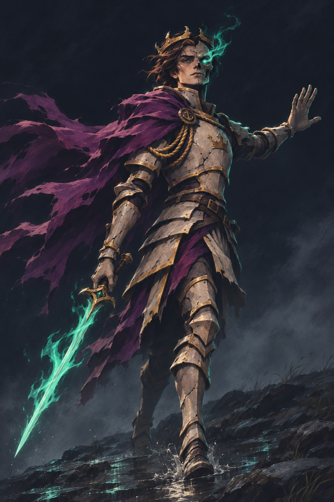
</header><section id="premise"><header class="sec-head"><span class="sec-num">01</span><h2>核心</h2></header><p class="lead">王子被自己的王国陷害而死。渡魂人在沉船之间点亮一盏灯，与他立下契约：他可以回来，率领旧部和亡魂向王都进军。每次失败或尘埃落定，契约都会把他带回同一个夜晚。</p><div class="pillars"><div class="pillar"><h3>复仇</h3><p>五名仇人各有利益，不靠魔法也有完整的谋杀因果。</p></div><div class="pillar"><h3>亲情</h3><p>妹妹是合法女王，有自己的意志，不是待救的物件。</p></div><div class="pillar"><h3>军团</h3><p>旧部有人想冒险，有人只想安息；服役和强制是两回事。</p></div><div class="pillar"><h3>永昼</h3><p>王都的神迹和全国的冬恩，都靠消耗灵魂维持。</p></div></div><figure class="wide">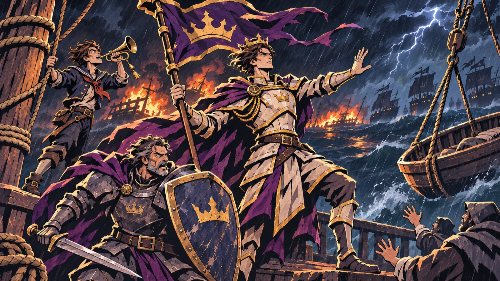<figcaption>最后的军旗：沉船之前，王子拒绝独自登上救生艇</figcaption></figure></section><section id="world"><header class="sec-head"><span class="sec-num">02</span><h2>世界</h2></header><div class="cols">
<div><h3>灵魂力量</h3><p>灵魂承载人格和记忆。人死后会留下一点残余冥火，它在没有日光的夜里能凝成形体，日出就散。王子的军团就由这些冥火召唤而成：战场上的士兵是死者的回声，没有人格，天亮即散；真正有名有姓的只有沉钟湾的旧部。</p>
<p>强行抽取灵魂本身，能得到多得多的力量，代价是那个人被一点点磨掉，直到彻底消失。</p></div>
<div><h3>两个太阳</h3><p>自然的太阳照常升落，世界有昼夜和四季。王都上空另有一轮苍白的环形光盘，那是太阳教会的神迹"永昼之日"，长明不熄，却没有热度。人造的光不算白天，所以王都在夜里同样可以攻打。</p>
<p>永昼之日熄灭的那一天，王都会第一次迎来完整的黑夜，看见满天星。</p></div>
</div>
<h3>神迹与秘密</h3>
<div class="tbl-wrap"><table class="tbl"><thead><tr><th>百姓看到的</th><th>真相（只有少数人知道）</th></tr></thead><tbody>
<tr><td>王都的永昼是神与王室立约的证明</td><td>光由秘印抽取的灵魂转化而来</td></tr>
<tr><td>冬天教士从王都请回圣火，点燃各地教堂的圣火龛，这是神恩</td><td>圣火是灵魂之火；运圣火的船，回程装的是被截留的死者</td></tr>
<tr><td>教会主持葬仪，登记亡者</td><td>部分葬仪把死者送往秘印</td></tr>
<tr><td>亡灵是天谴</td><td>亡灵只是夜里凝成形体的残余冥火</td></tr>
</tbody></table></div>
<p class="note">全国都靠圣火过冬，但分得极不均匀：王都最暖，外岛和贫村只有一点。终止永昼意味着所有圣火龛在这个冬天之后不再点燃，代价由整个王国承担。</p>
<h3>王子与他的军团</h3>
<p>王子白天可以行走、谈判、出现在宫廷里，只是没有战斗的力量。他的军团只在夜里存在：日出时回声散去，旧部和舰队亡魂沉回船壳，整支舰队在水下随他航行，入夜再浮起。回溯只是王子和渡魂人之间的契约，与永昼无关。</p>
<h3>宗教与王朝</h3>
<p>太阳教会原本是水手的信仰，敬拜为航行指方向的太阳；王朝起于海上，旧纹章是星与浪。大寒冬时教会造出永昼，王室改用白底金八芒日以示立约。旧王庭的遗迹上刻的仍是星。</p></section><section id="cast"><header class="sec-head"><span class="sec-num">03</span><h2>人物</h2></header><div class="pgrid three"><article class="pcard"><h4>埃德蒙</h4><p class="role">亡灵王子</p><p>勇敢、爱美、不耐拖延。他签过一道伤害了百姓的冬季征发令，也在沉船时拒绝独自逃生。容易把忠诚当成无限服从。</p></article><article class="pcard">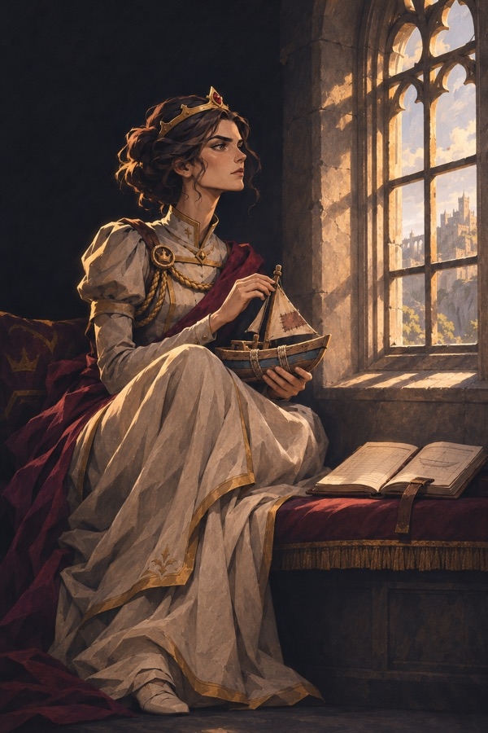<h4>埃莉诺</h4><p class="role">女王，20 岁</p><p>会读宫廷账目，掌管各地冬恩的分配，却不知道圣火从哪里来。被议会控制，但不糊涂。</p></article><article class="pcard">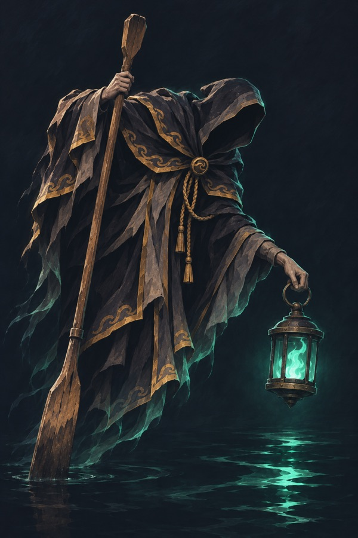<h4>渡魂人</h4><p class="role">提灯的摆渡者</p><p>只渡人，不碰圣火，也不能熄灭永昼。知道被抹去的历史，却不是全知。身份到最后也不完全揭开。</p></article></div><h3>沉钟湾旧部：增益的来源</h3><div class="pgrid four"><article class="pcard small">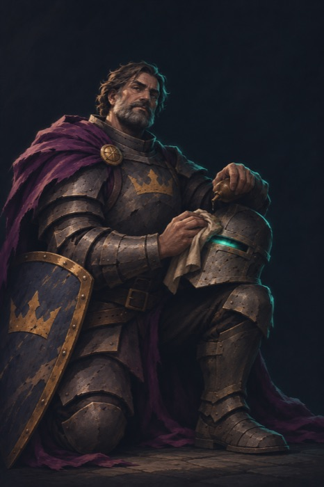<h4>伯纳德</h4><p class="role">卫队长 · 整体战力</p><p>“请准许我提出异议，殿下。”</p></article><article class="pcard small">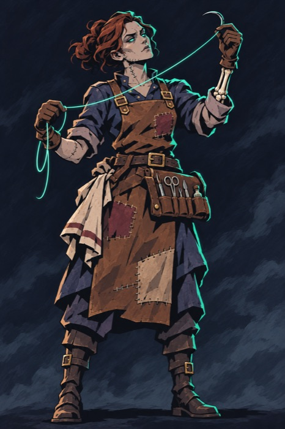<h4>玛蒂尔达</h4><p class="role">军医 · 兵种质变</p><p>“死了也不是乱扭的理由。”</p></article><article class="pcard small">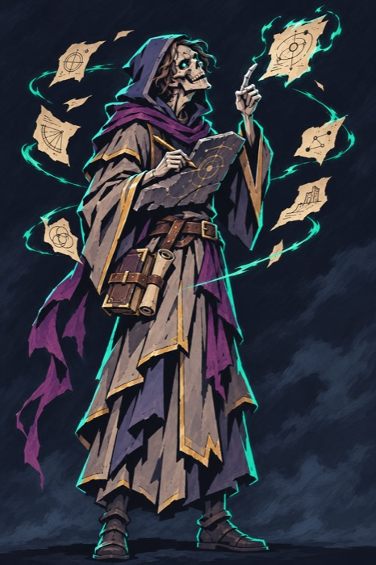<h4>奥斯温</h4><p class="role">法师 · 冥火</p><p>“制度骇人，工程精妙。”</p></article><article class="pcard small"><h4>皮普</h4><p class="role">号手 · 指挥</p><p>“就是有几位分成了好几块。”</p></article></div><h3>五名仇人：每条航线一个首领</h3><div class="pgrid five"><article class="pcard small">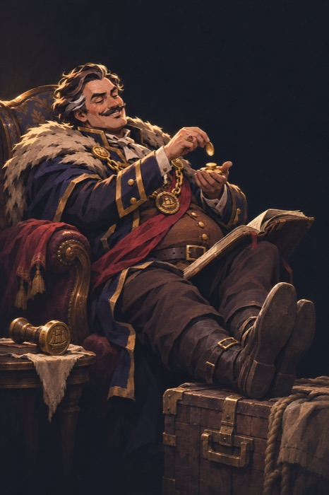<h4>罗德里克伯爵</h4><p class="role">首领据点 · 盐市港</p><p>他的船队运送圣火，也运送死者</p></article><article class="pcard small">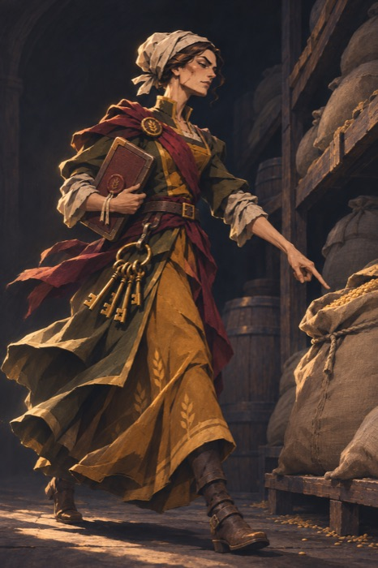<h4>阿格尼丝女伯爵</h4><p class="role">首领据点 · 万谷仓</p><p>靠冬恩分配控制粮区，怕的是饥荒</p></article><article class="pcard small">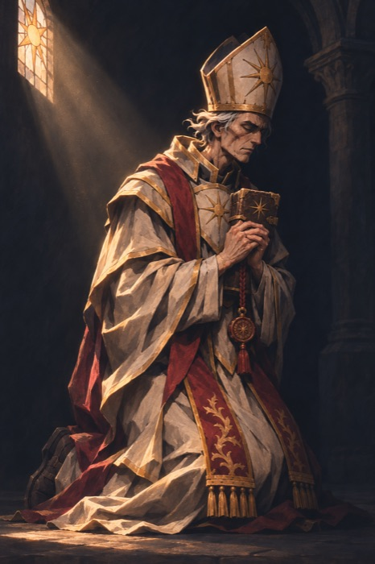<h4>安塞姆大主教</h4><p class="role">首领据点 · 苍白圣堂</p><p>秘印的守护者，伪造了叛国判决</p></article><article class="pcard small">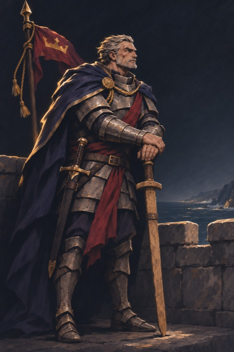<h4>休元帅</h4><p class="role">首领据点 · 锁海之门</p><p>王子的剑术老师，相信没有冬恩就会内乱</p></article><article class="pcard small">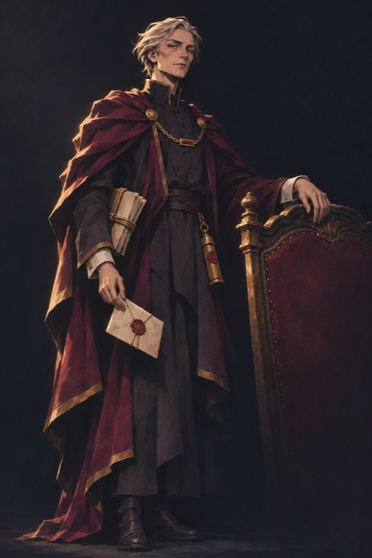<h4>沃尔特宰相</h4><p class="role">首领据点 · 永昼王城</p><p>组织阴谋，要的是联盟延续</p></article></div></section><section id="siege"><header class="sec-head"><span class="sec-num">04</span><h2>夜袭攻城</h2></header><p class="lead">玩家站在进攻方。参考的是 Bad North 的微缩战场和低操作调度，以及部落冲突式的原子化部署和皇室战争式的资源回复。</p><p>每场战斗都是一个夜晚：五分钟，从入夜打到破晓。王子手里没有预先编好的军队，只有<b>冥火</b>。</p><div class="cols">
<div><h3>冥火</h3><p>开局有一笔储备，随夜色回复，有储存上限，越接近黎明回复越快。召唤每种亡灵各有费用，长按就能连续部署；冥火也用来施放狂化、虚弱、轰击和集结。多召一队兵，还是留着施一个法术，是每一刻的取舍。</p></div>
<div><h3>自主作战</h3><p>亡灵落地后自己选目标、走路线、交战。玩家决定的是在哪里、什么时候、投入多少、投入什么。集中突破、两翼夹击、佯攻、分批增援，都来自空间、时间和兵力的分配，而不是专门的按钮。</p></div>
</div><figure class="wide">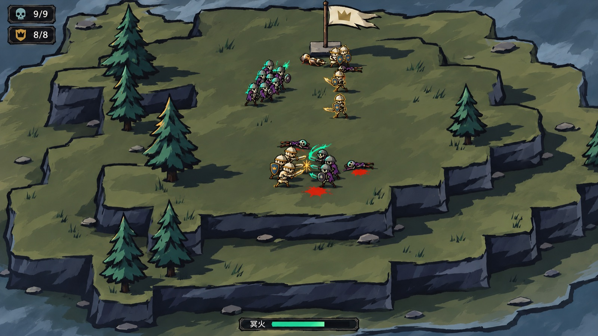<figcaption>局内画面样张：小兵带墨线外轮廓，亡灵是青绿边光，守军是暖金边光</figcaption></figure><h3>一个夜晚的三段</h3>
<div class="tbl-wrap"><table class="tbl"><thead><tr><th>阶段</th><th>目的</th><th>可能的行动</th></tr></thead><tbody>
<tr><td><b>初夜</b></td><td>准备战场</td><td>刺客切掉高地弓兵，巨人打开薄弱墙段，小股佯攻牵制</td></tr>
<tr><td><b>中段</b></td><td>扩大战果</td><td>趁守军调动留下的空档绕侧，开辟第二战线</td></tr>
<tr><td><b>黎明前</b></td><td>兑现构筑</td><td>冥火回复和亡灵战力到达顶峰，主力总攻</td></tr>
</tbody></table></div>
<p class="note">这不是脚本。守军的伤亡不补充，城墙的破口不修复，所以每一波都给下一波留下条件；构筑成型后，也可能一波就解决原本需要层层准备的防线。</p>
<h3>守军会调兵</h3>
<p>守军依托地形和要塞防守：盾兵守阵线，枪兵卡隘口，弓兵占高地，骑兵是机动预备队，神职者有范围攻击。各战区有最低驻防，威胁大了会派兵支援，但派兵有延迟、行军要真实走路。玩家可以看到援军的去向，并利用它离开后留下的空缺。</p>
<h3>胜利</h3>
<p>全歼守军；或者攻占主据点，迫使剩余守军跑去港口坐船撤离。天亮前两者都没做到，就是失败。</p>
<h3>地形与要塞</h3>
<p>自然地形没有血量，不可破坏，只决定通路和交战宽度。城墙和城门是主要的进攻思路，可以局部打破。大路适合主力展开，小路可以绕行，山洞是捷径。暗影刺客之类的兵种可以无视部分地形。</p></section><section id="build"><header class="sec-head"><span class="sec-num">05</span><h2>构筑</h2></header><p>远征前期要靠多兵种配合，后期可以围绕一两个兵种形成近乎"轮椅"的质变；混编、冥火经济、指挥法术也都是成型路线。</p><div class="tbl-wrap"><table class="tbl"><thead><tr><th>兵种</th><th>方向</th><th>强化组合示例</th></tr></thead><tbody><tr><td><b>盾骷髅</b></td><td>生存流</td><td>最大生命 + 持续回血 + 减伤反伤：几只骷髅就能在正门拖住大批守军</td></tr><tr><td><b>暗影刺客</b></td><td>渗透流</td><td>特殊通行 + 潜行 + 击杀后重新潜行：越过常规通路，连续处理弓兵和神职者</td></tr><tr><td><b>巫妖</b></td><td>控制流</td><td>致盲 + 眩晕 + 控制扩散：让挤在城门的盾枪守军无法反击</td></tr><tr><td><b>狂战士</b></td><td>濒死爆发流</td><td>跳劈 + 不屈 + 击杀回血：构筑成型后连续跳入敌阵</td></tr><tr><td><b>死灵骑士</b></td><td>冲锋流</td><td>冲锋 + 践踏 + 再次突进：在开阔大路上追击转移中的守军</td></tr><tr><td><b>缝合巨人</b></td><td>破城流</td><td>强化耐久 + 范围震荡 + 破墙：前期打开侧墙，给主力更宽的交战面</td></tr></tbody></table></div><h3>强化从哪来</h3><div class="tbl-wrap"><table class="tbl"><thead><tr><th>旧部</th><th>方向</th></tr></thead><tbody>
<tr><td><b>伯纳德</b></td><td>整体战力：前排、生存、全军属性</td></tr>
<tr><td><b>奥斯温</b></td><td>冥火：储备、上限、回复、召唤费用，以及直接伤害法术</td></tr>
<tr><td><b>皮普</b></td><td>指挥：狂化、虚弱、集结、调度</td></tr>
<tr><td><b>玛蒂尔达</b></td><td>特定兵种的质变</td></tr>
<tr><td><b>渡魂人</b></td><td>改变规则的馈赠，例如"开局冥火加倍，但夜里不再回复"，或"以战养战：只靠击杀获得冥火"</td></tr>
</tbody></table></div><figure class="wide">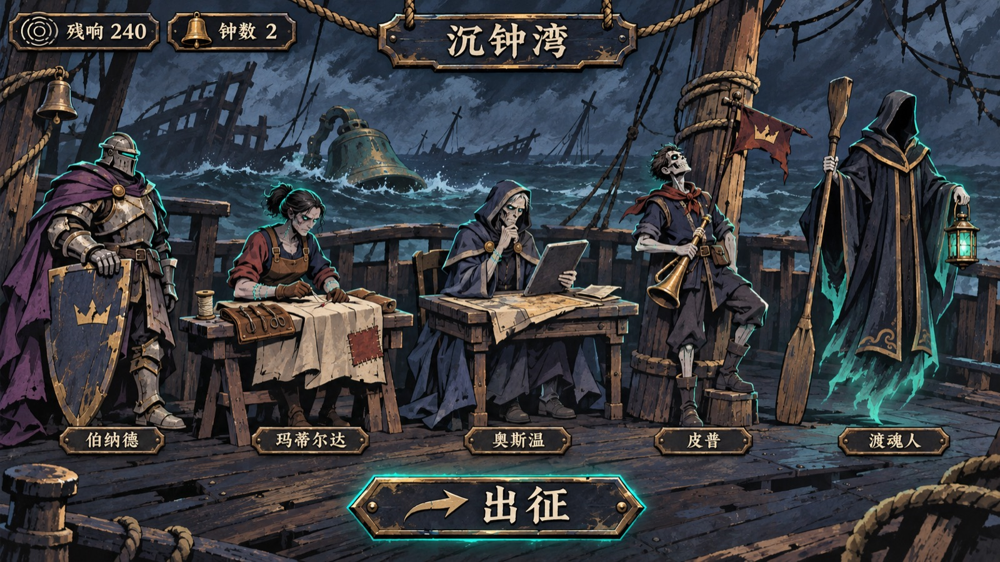<figcaption>沉钟湾据点：五位旧部站在浮起的旗舰甲板上</figcaption></figure><p class="note">跨越回溯保留的是王子学到的东西：指挥和召唤的技艺、打过的战场的敌情、对每位旧部的默契、走过的航路和证据的下落。士兵本身每一夜重新召唤。</p></section><section id="atlas"><header class="sec-head"><span class="sec-num">06</span><h2>王冠海航路</h2></header><figure class="wide">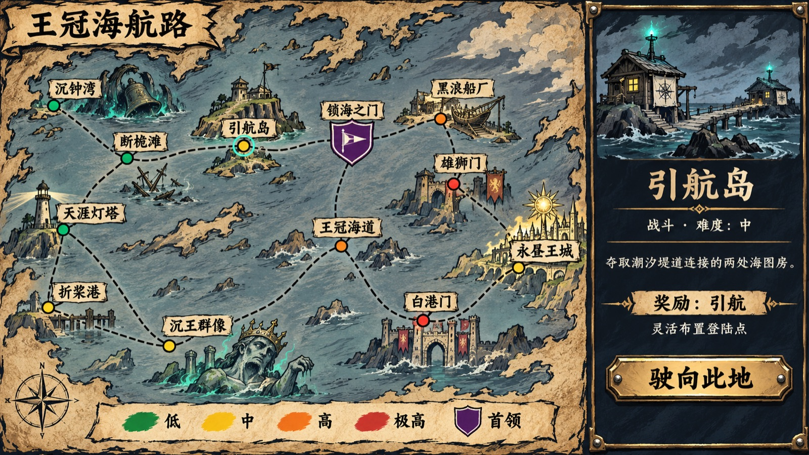<figcaption>航海图：颜色是难度，紫色纹章是首领据点</figcaption></figure><p>王冠海上 38 个地点、四座王都城门。一局沿一条航道向王都突破，五到七场攻城，中间穿插剧情地点；攻下一处只是打开下一段航道，不经营领土。<b>路越短越难</b>：前几局要绕远路攒构筑、收集证据，王子记住的敌情越多，后面越能走捷径。</p><div class="tbl-wrap"><table class="tbl"><thead><tr><th>阶段</th><th>典型战场</th><th>规模</th></tr></thead><tbody>
<tr><td>前期</td><td>渔村、灯塔、哨站</td><td>2–3 个战区，木栅或无墙</td></tr>
<tr><td>中期</td><td>港口、城镇、修道院</td><td>4 个战区，城墙、城门、高地、山洞</td></tr>
<tr><td>后期</td><td>要塞关口、永昼王城</td><td>5–6 个战区，两道防线</td></tr>
</tbody></table></div>
<p>战场按战区组织：海岸、高地、外城、主堡……每个战区有一个精心构图的固定视角，玩家在总览图上切换战区。王都的夜战最特别：永昼之日把整座城照得通明，亡灵失去夜色的掩护，守军的弓兵看得更远。</p></section><section id="units"><header class="sec-head"><span class="sec-num">07</span><h2>兵种</h2></header><figure class="wide">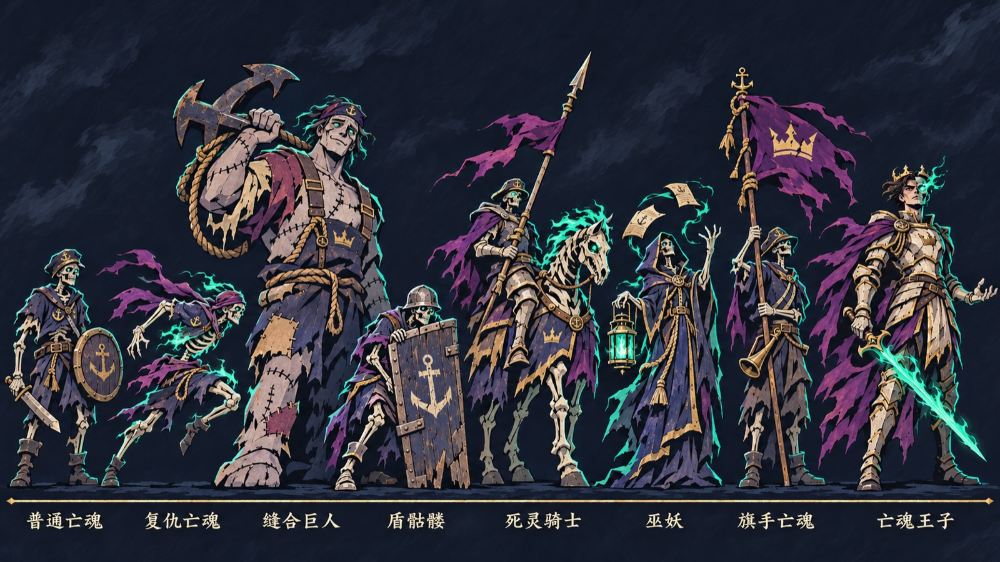<figcaption>亡魂大军</figcaption></figure><figure class="wide">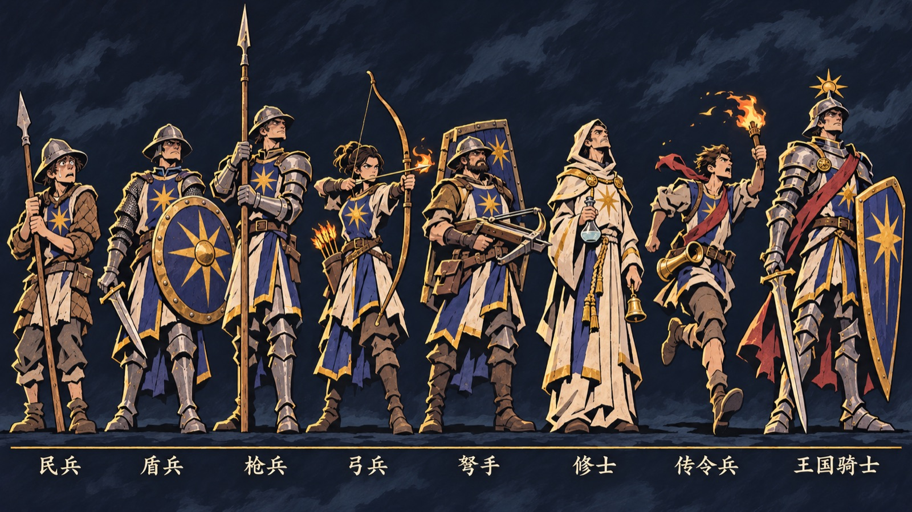<figcaption>王国守军：活人，白金日光</figcaption></figure><figure class="wide">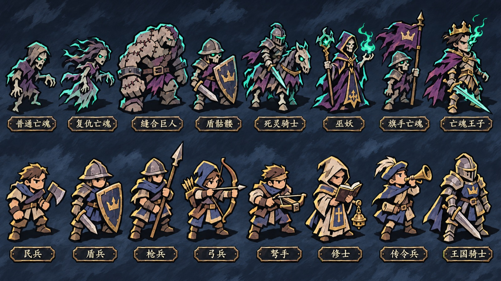<figcaption>局内的 Q 版小兵：2.3 头身，墨线描边，阵营边光</figcaption></figure></section><section id="endings"><header class="sec-head"><span class="sec-num">08</span><h2>结局</h2></header><p>王都章节里，王子要作出三次决定，分开在三个场景里，每次都会改变接下来的战斗和剧情。</p>
<ol class="flow"><li><b>王权</b>：坚持自己的王位，或承认妹妹的王冠</li><li><b>军誓</b>：保留对旧部的强制，或只留自愿者</li><li><b>永昼</b>：让秘印继续消耗灵魂，或终止它，让王都和全国的圣火一起熄灭</li></ol><div class="tbl-wrap"><table class="tbl endings"><thead><tr><th></th><th>结局</th><th>王权</th><th>军誓</th><th>永昼</th><th>渡魂人</th></tr></thead><tbody><tr><td class="eid">E00</td><td><b>再沉灰海</b></td><td>—</td><td>—</td><td>—</td><td class="q">“看来还没到家。”</td></tr><tr><td class="eid">E01</td><td><b>灰烬王冠</b></td><td>坚持</td><td>保留</td><td>延续</td><td class="q">“那么，陛下。一切都如你所愿吗？”</td></tr><tr><td class="eid">E02</td><td><b>空冠</b></td><td>坚持</td><td>解除</td><td>延续</td><td class="q">“你让士兵走了。我倒是注意到，城里依然亮着。”</td></tr><tr><td class="eid">E03</td><td><b>冥夜摄政</b></td><td>承认</td><td>保留</td><td>延续</td><td class="q">“你把王冠留给了她。王国呢？”</td></tr><tr><td class="eid">E04</td><td><b>归途</b></td><td>承认</td><td>解除</td><td>延续</td><td class="q">“弟兄们都到家了。除了那些我们还没找到的人。”</td></tr><tr><td class="eid">E05</td><td><b>长夜之王</b></td><td>坚持</td><td>保留</td><td>终止</td><td class="q">“太阳落下了。你的命令却还没有结束。”</td></tr><tr><td class="eid">E06</td><td><b>凡世王国</b></td><td>坚持</td><td>解除</td><td>终止</td><td class="q">“一个需要蜡烛的王国。想想那笔开销吧。”</td></tr><tr><td class="eid">E07</td><td><b>最后的守望</b></td><td>承认</td><td>保留</td><td>终止</td><td class="q">“漫长的守望。希望你还记得问问谁愿意留下。”</td></tr><tr><td class="eid">E08</td><td><b>第一次日落</b></td><td>承认</td><td>解除</td><td>终止</td><td class="q">“很美的一场日落。可惜没有别人记得。”</td></tr></tbody></table></div><div class="gallery wide2"><figure>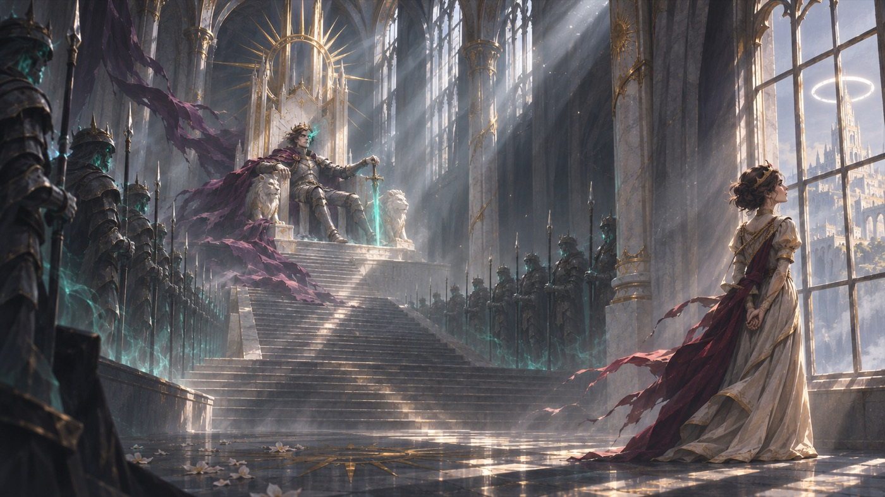<figcaption>E01 · 灰烬王冠</figcaption></figure><figure>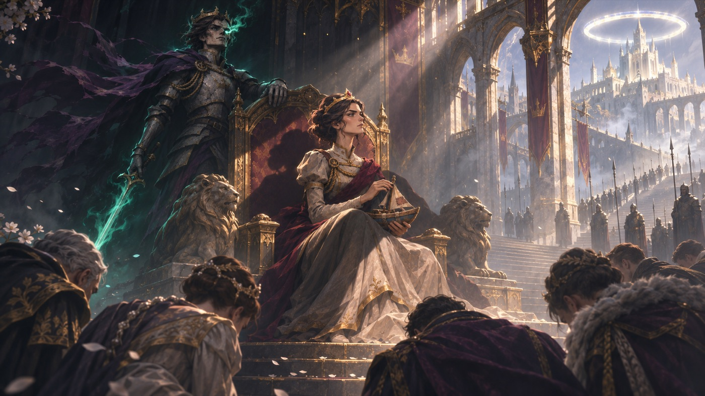<figcaption>E03 · 冥夜摄政</figcaption></figure><figure>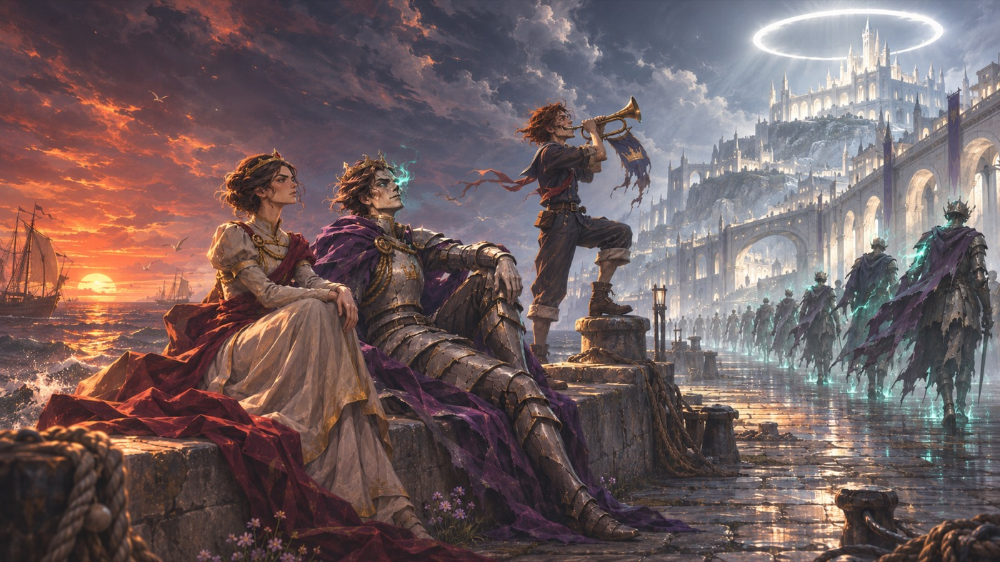<figcaption>E04 · 归途</figcaption></figure><figure>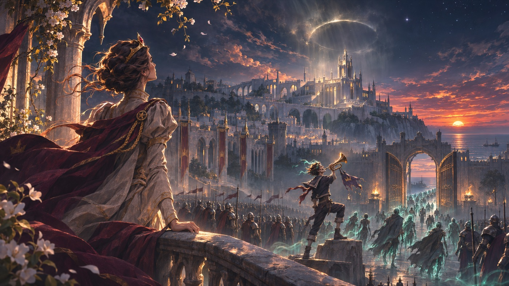<figcaption>E08 · 第一次日落</figcaption></figure></div><p>开放顺序：第一次胜利只能是 E01；之后开放 E02–E04；查清秘印之后开放 E05–E08。"第一次日落"指的是永昼之日熄灭后，王都第一次迎来真正的黑夜和满天星。</p><h3>真结局</h3><p>亲眼看到秘印释放囚魂之后，王子才第一次明白束缚可以被放下。解约的权利一直在他手里。下一次胜利后，他安排好继承、解除军誓，熄灭渡魂人的灯，渡过灰海。演职员表，存档封存。</p><blockquote class="big">渡魂人：这盏灯一旦熄灭，就再没有回来的岸了。<br>埃德蒙：我知道。<br>渡魂人：那就上船吧。</blockquote></section><section id="art"><header class="sec-head"><span class="sec-num">09</span><h2>美术方向</h2></header><figure class="wide">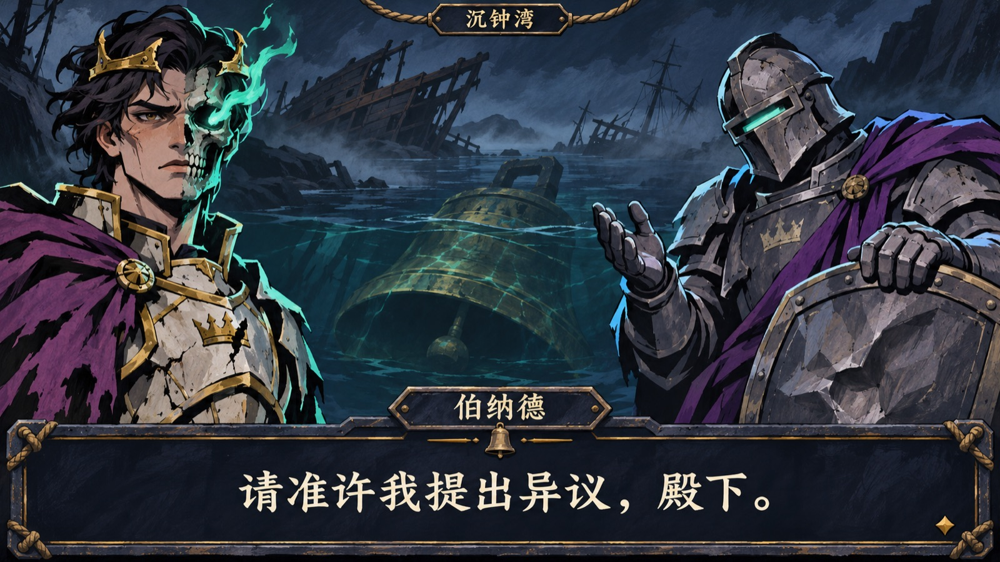<figcaption>对话界面：半身立绘与暗化的场景</figcaption></figure><ul class="bullets">
<li><b>人物立绘</b>：精炼墨线。成熟比例，墨线只在形体转折处出现，一个自然的主光源、大面积暗部、细轮廓光，构图像海报。</li>
<li><b>结局插画</b>：史诗厚涂，强调光影、权力关系和氛围；画面上不放任何文字。</li>
<li><b>光的语言</b>：亡灵是青绿冥火，王国是白金日光，永昼之日是苍白无热的光盘。</li>
<li><b>UI</b>：深墨蓝漆面加一条细金线，克制，只有一种材质；转场只用三种：涨潮、钟声、提灯。</li>
<li><b>局内</b>：3D 微缩地形加朝向镜头的小兵精灵，每个战区一个固定视角。</li>
</ul></section>
<footer><p>依据 docs/canon（ABC R1）、docs/roguelike.md、docs/boons.md、docs/art-style.md 生成。名称与数值均为暂定。</p></footer></main>
